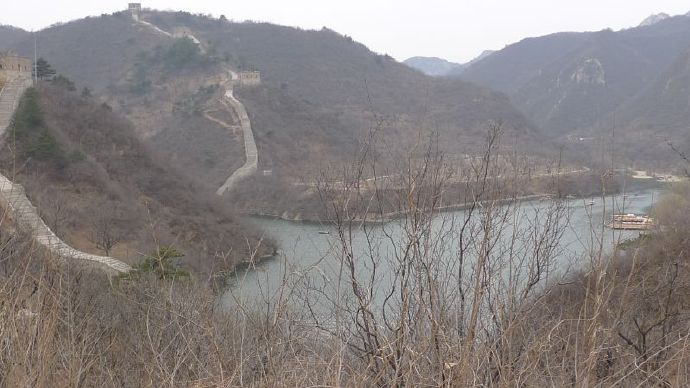
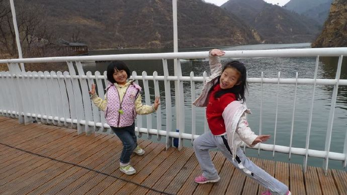
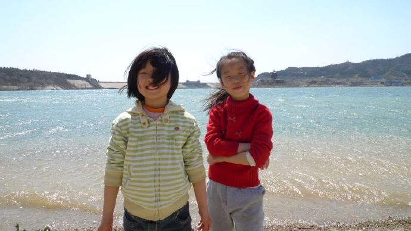
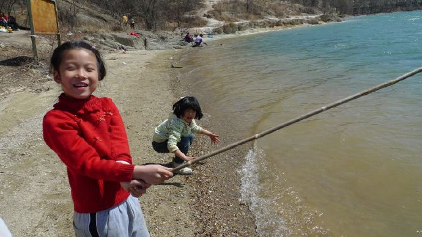
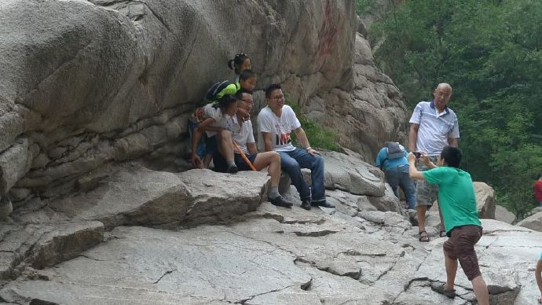
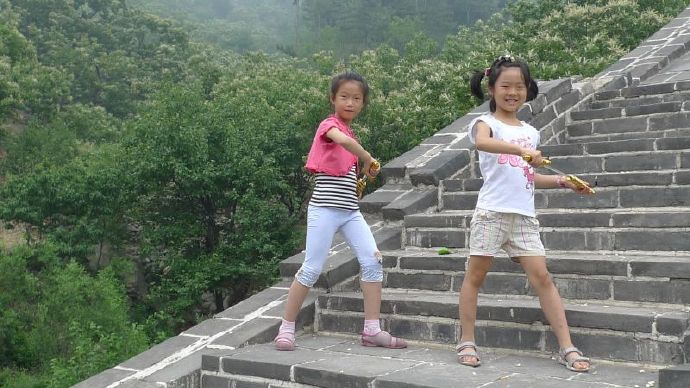
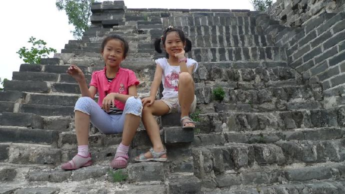

清明节的时候，和袁臻一家去怀柔的黄花水长城。古旧的长城从蜿蜒的山上一头扎到水里，风景还是很不错的。山谷里还有一条小溪一路伴随，只是天太冷了，孩子没法玩水。于是端午节的时候又去了一次。天气倒是热了，可是水怎么干了呢？那条记忆中的小溪哪里去了呢？郭嘉清明的时候没来，他一直觉得我描述的小溪和山谷只是一个神话……

清明的时候，山还是光秃秃的，长城从山上一路蜿蜒扎进水中，风景还是很怡人的

天气很冷，划船的时候还要穿棉袄。孩子们没法玩水，但是一路抓水中的小鱼，很快乐


回来的路上经过十三陵水库，孩子们在水边玩沙子、捡贝壳，十分开心。看照片是不是像在海边？


端午节旧地重游

这是一段野长城，很陡、很破旧、很危险。两个小朋友手脚并用爬了上去